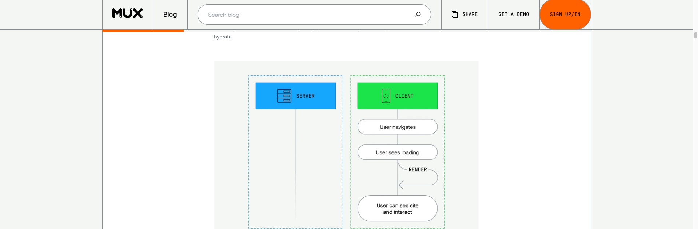

- scroll()
- CSS函数可用于指示可滚动元素 ( scroller ) 和滚动条轴，这将提供匿名滚动进度时间轴以对当前元素进行动画处理。通过在顶部和底部（或左侧和右侧）之间滚动滚动条来推进滚动进度时间线。滚动范围中的位置将转换为进度百分比 — 开始时为 0%，结束时为 100%。scroll() animation-timeline
- animation-timeline
滚动动画 用滚动驱动的动画是网站上非常常见的用户体验模式，比如当页面向前或向后滚动时，对应的动画也会向前或向后移动。 比如下面图中这种比较常见的，页面顶部的进度条随着滚动而变化：
